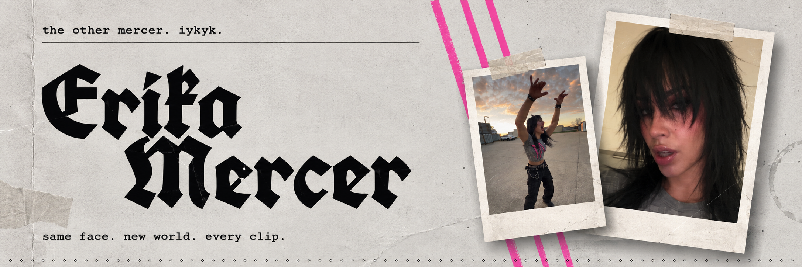

Mercer genetics
A rooftop gap, a little confidence and an impossible landing.

Same character. Three very different moments. Press play and step inside Erika's world.
A rooftop gap, a little confidence and an impossible landing.
Two Mercers, one room and a shared sense of attitude.
A change of scenery. The same unmistakable character.
FULL CLIPS · SOUND AVAILABLE · PLAYBACK STARTS WHEN YOU PRESS PLAY
Fictional character. Real creative work.
AI-ASSISTED VISUAL STORYTELLING